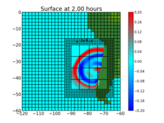
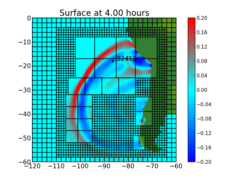
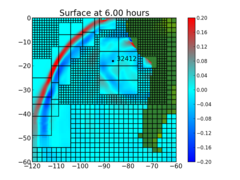
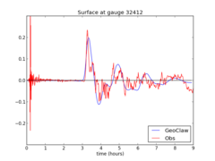
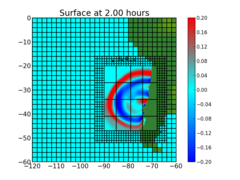
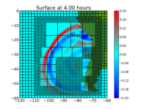
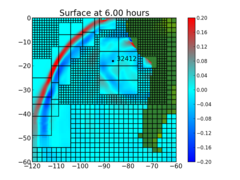
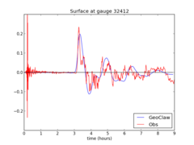

Gallery of GeoClaw applications¶
Contents
Chile 2010 tsunami¶
Directory: `$CLAW/geoclaw/examples/tsunami/chile2010`
Simple model of the 2010 tsunami arising offshore Maule, Chile.
   Contents
Directory: `$CLAW/geoclaw/examples/tsunami/chile2010`
Simple model of the 2010 tsunami arising offshore Maule, Chile.
   